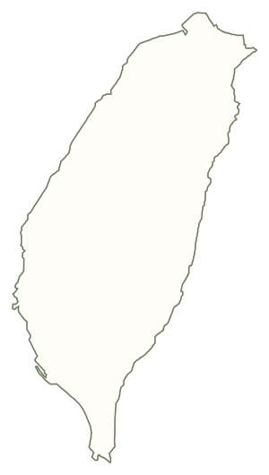
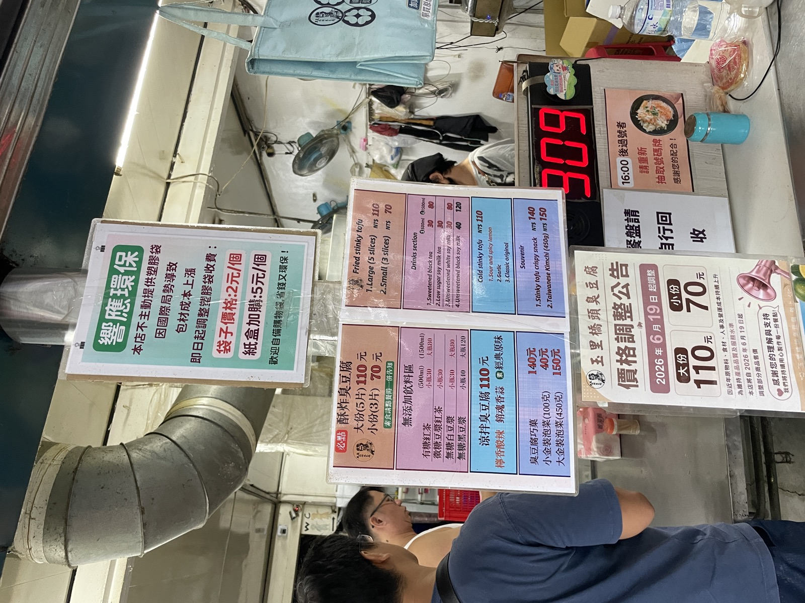
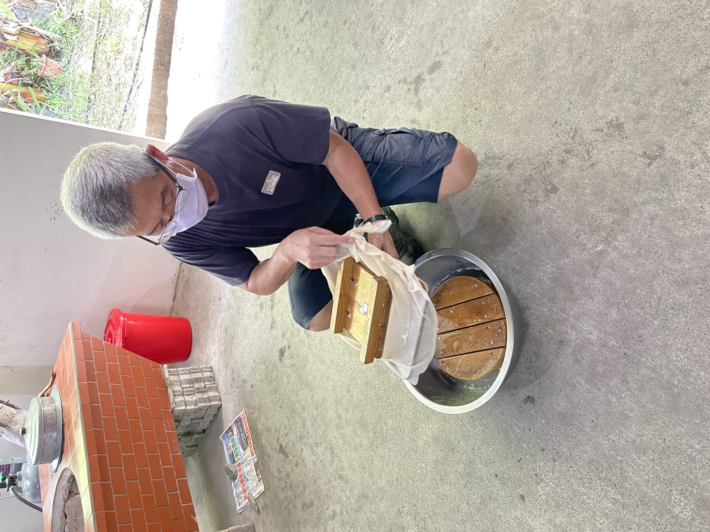
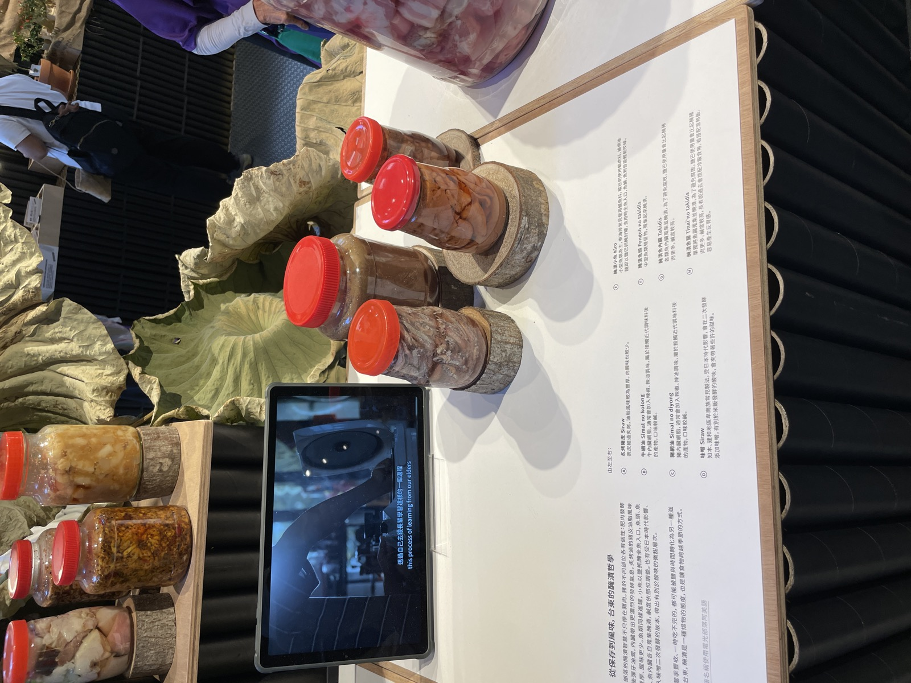
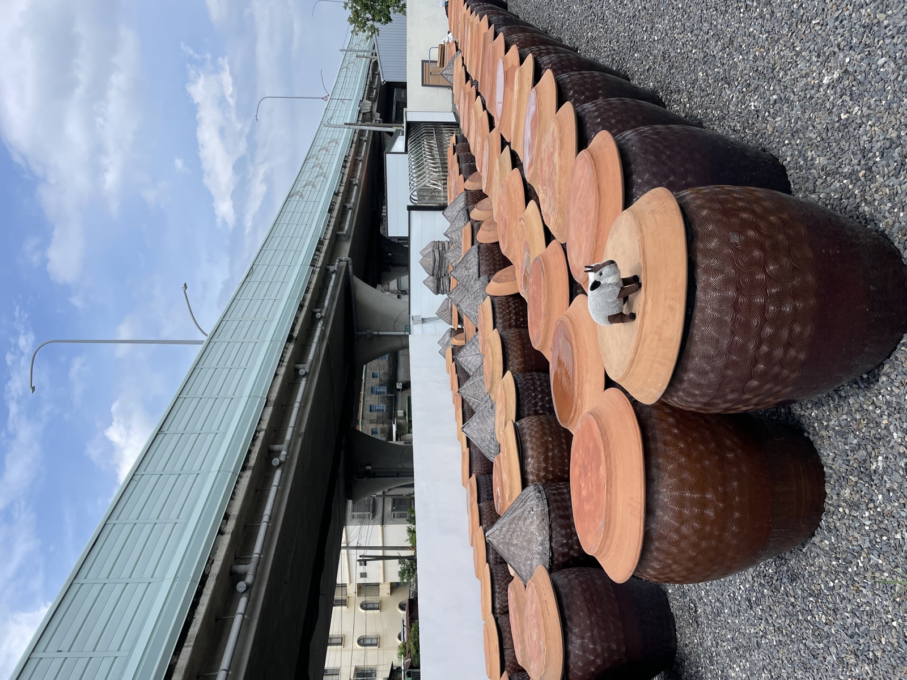
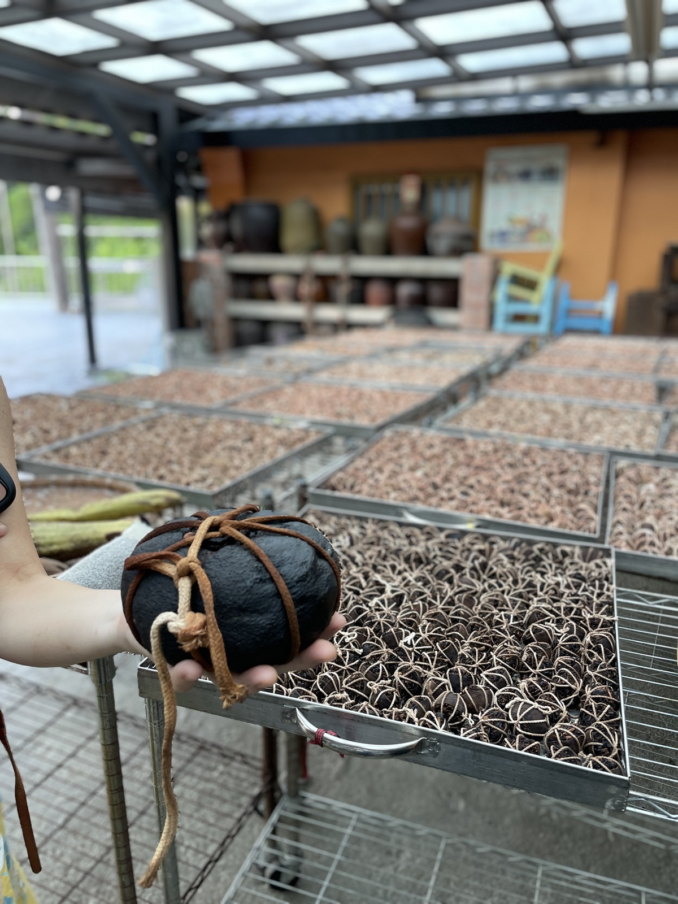
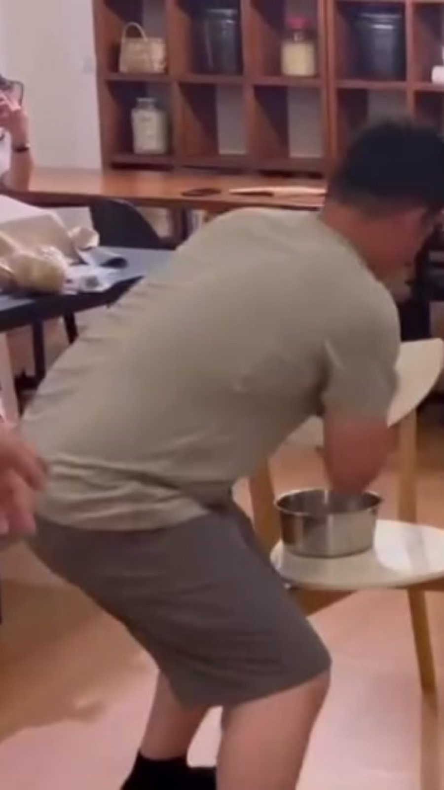
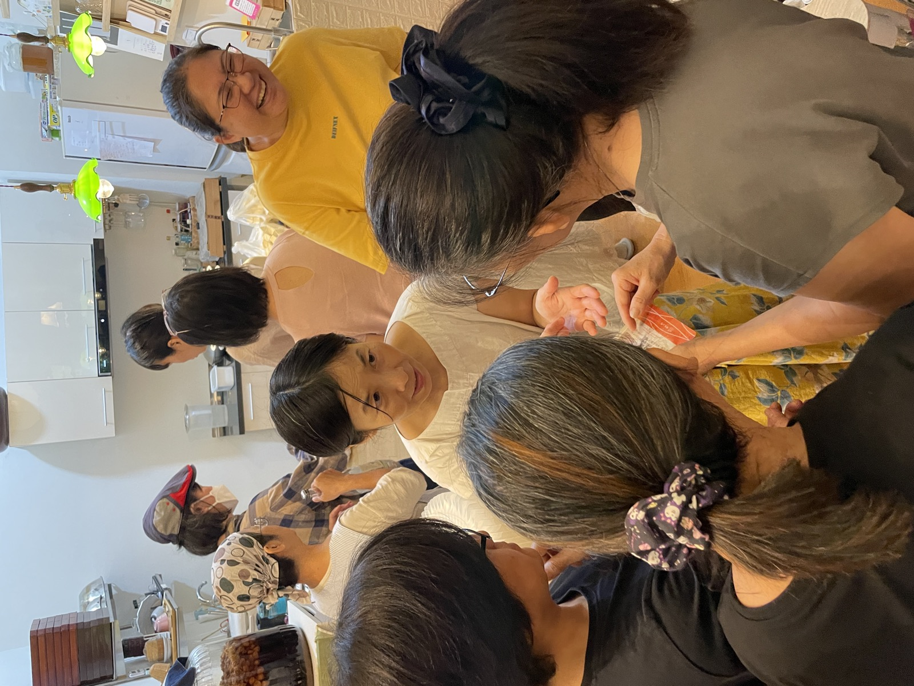
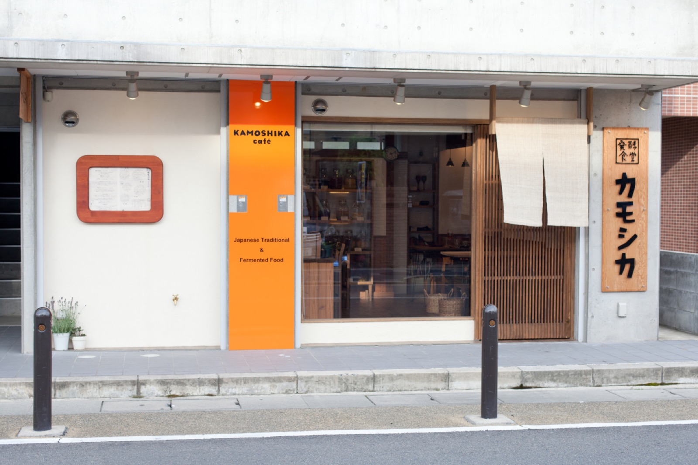

TAIWAN / 2026.08.09—16
台湾一周
発酵の旅
京都・嵐山

京都・嵐山
1ここから第1章 花蓮・玉里 8/10
臭い。でも、旨い。

2第2章 花蓮・羅山村 8/11
昔は陸の孤島だったという羅山村。

3第3章 台東 8/12
触れて嗅げるけど、買えない。

4第4章 屏東・皇珵醬油 8/13
「この製品は、まだ私は気に入っていません」

5第5章 新竹・北埔 8/14
三年で薬になり、七年で宝になる、と言われて来たそう。

6第6章 台北・迪化街 8/15
「私たちは、自然を母だと思っています」

7第7章 台北・大稻埕 8/16
「ぬか床をもうやっている人、手を挙げてください」

終終章 京都・嵐山 帰国後
この人たちとは、またどこかで会うよな、と。